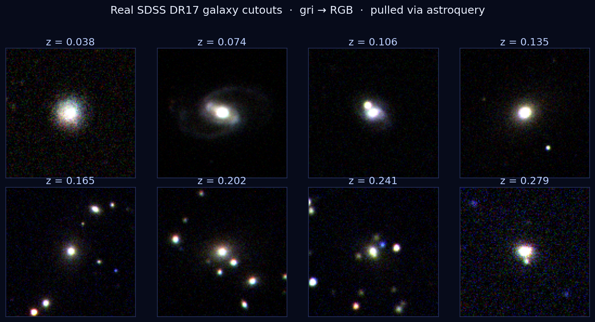
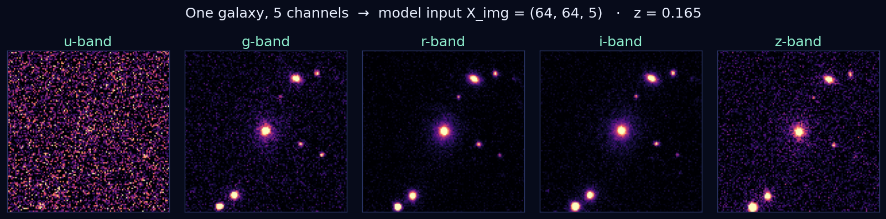

Redshift z tells a galaxy's distance & recession velocity — the backbone of cosmology. The exact way to get it is spectroscopy: accurate but slow & expensive, only a few targets at a time.
Imaging is cheap & everywhere — every object already has it. We learn to predict the expensive spectroscopic z from cheap photometry/images. Benchmark: σ_MAD < 0.01 (Pasquet 2019).
Source: SDSS DR17 via astroquery.sdss — SQL join PhotoObj × SpecObj · ~100k galaxies, z<0.4
| objid | ra | dec | mag_u | mag_g | mag_r | mag_i | mag_z | redshift (y) | class |
|---|---|---|---|---|---|---|---|---|---|
| 1237668271910748532 | 231.336 | 14.080 | 21.63 | 19.63 | 18.14 | 17.61 | 17.27 | 0.2371 | GALAXY |
# X = 5 mags + 4 colors + size ; image = ugriz cutout X_tab (N,13) X_img (N,64,64,5) y (N,) = redshift # supervised regression
Observed-frame features only — no absMag/kcorr (computed from z → leakage).

Same physical objects, increasing z → smaller & redder. That trend is the signal the model learns. 64×64 stamps centered on each galaxy via WCS.

Every object is imaged in 5 bands (u g r i z). Stack them → X_img = (64, 64, 5). Brightness/shape shifts across bands encode redshift.
astroquery# spectroscopic z (label) + photometry (features) SELECT TOP 100000 p.objid, p.ra, p.dec, p.modelMag_u, p.modelMag_g, p.modelMag_r, p.modelMag_i, p.modelMag_z, p.petroR50_r, p.run, p.camcol, p.field, # locate frames s.z AS redshift FROM PhotoObj p JOIN SpecObj s ON s.bestObjID = p.objID WHERE s.class='GALAXY' AND s.zWarning=0 AND p.clean=1 AND s.z BETWEEN 0.02 AND 0.35
from astroquery.sdss import SDSS from astropy.coordinates import SkyCoord from astropy.nddata import Cutout2D import astropy.units as u tab = SDSS.query_sql(sql, data_release=17) def cutout(ra, dec, band): pos = SkyCoord(ra, dec, unit='deg') hdu = SDSS.get_images(coordinates=pos, band=band, radius=8*u.arcsec, data_release=17)[0] w = WCS(hdu[0].header) return Cutout2D(hdu[0].data, pos, (64,64), wcs=w).data img = np.stack([cutout(ra,dec,b) for b in 'ugriz'], -1)
✅ Verified end-to-end on DR17 — sample of 200 galaxies (z 0.02–0.35) + cutouts already pulled. astroquery caches frames locally, so re-runs are free.
Baseline: XGBoost on the 13 tabular features → z. Trains in seconds, sets the bar & wires the webapp early.
Main: small CNN on (64,64,5) arcsinh-stretched cutouts, then fuse image features + tabular into a dense head.
Loss: Huber/MSE on z · Adam + early stopping · split 70/15/15.
Report σ_MAD, bias ⟨Δz⟩, outlier rate (|Δz|/(1+z)>0.05), and a z_pred vs z_spec scatter. Target σ_MAD < 0.01.
Guardrail: observed-frame inputs only — never feed absMag/kcorr (derived from z → leakage). Stretch images, augment with flips/rotations.
astroquery (SQL join PhotoObj × SpecObj)zWarning=0, clean=1absMag, kcorr)